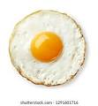

Fried Eggs

Here is my recipe for fantastic fried eggs! Frying an egg is a valuable life skill. You've come to the right place.
Ingredients
Steps
- Get a frying pan. Put frying pan on hob and turn it on.
- Add any oil of your choice to the pan.
- Grab some eggs
- Break the eggs onto the pan
- Let them cook until they start to look done
- Turn off the pan and serve the eggs with salt and pepper